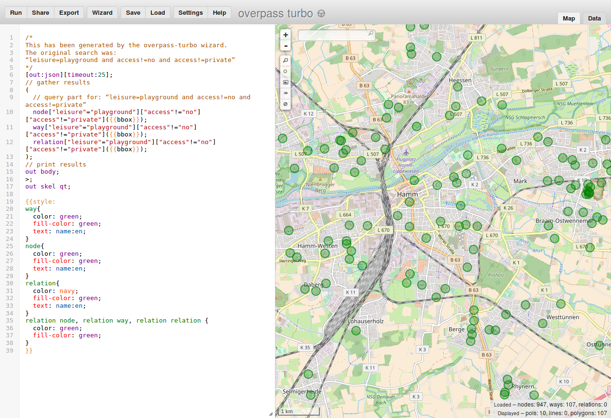
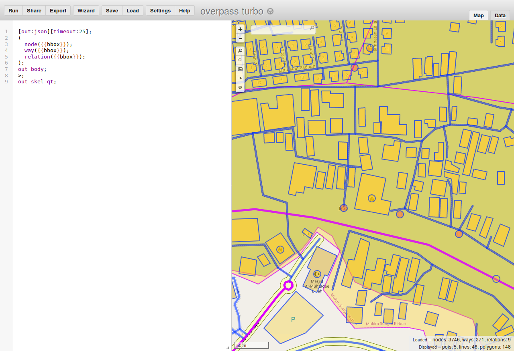

Status: unfinished draft that is actively updated (as of June 2018).
Published part is unfinished and ends abruptly and has some TODOs scattered around. But it is supposed to be free from mistakes, typos, unclear text, missing explanations, grammar problems etc. Please sent mail to matkoniecz@gmail.com if you spot anything wrong!
Feel free to send mail also if this page was useful for you :)
Go to openstreetmap.org and look around.
Default map at that page displays small part of data collected by the OpenStreetMap contributors. Depending on region various features should be visible - roads, rivers, railways, forests, buildings, shops, peaks, lakes, cemeteries, caves, hospitals, paths, springs and many more.
It is possible to download and use this data, on this page I will present my favourite method - a tool called Overpass turbo.
Let's open the first query. It should show page with map on the right and panel with mysterious text on the left. Ignore gibberish on the left and wait for the query to complete. Within seconds museums in Kraków should be marked on the map.
Now lets try something else - public playgrounds in Hamm - follow this link to try this query.
Maybe you just want to grab all data from given area and download it? And do entire processing and filtering in other tool like QGIS? Or just look at all what is mapped? Next query will show all data within specified area. Note that this data is a direct copy of OpenStreetMap database so you will need some help in interpreting the data. Next sections should help with that.
So now a query to get everything.
I just mentioned that this query will get everything. Fortunately, it is not true. It will get everything within area visible in your map view. You can pan around to see that objects not inside this area are not downloaded. After moving map to a different location and select "run" button on top-left to see results of query in a different location.
So far all presented querries take into account part of the map visible on the screen. But avoid zooming out to much - large areas like entire cities have to much data to display at once.
Filtering is necessary to display data for larger area - attempt to download all data at once would not succeded. OSM database crossed 500 GB long time ago, displaying all of it is a complicated task that requires more specialized tools than a web browser.
Querries that filter data (like ones presented before "get everything" query) will work for much bigger areas, some may even allow to scan entire world and display all objects matching filter!
But before trying our luck with worldwide querries (it requires using left panel, so lets ignore it for now) lets try a different adventure.
Now you will make a new query.
Lets say that we want to query for glaciers.
Previous examples maybe were interesting but covered only a small group of examples.
How one is supposed to guess what should be used to display wetland areas? Or univerities? Or prisons? Or other feature among thousands possible?
Fortunately guessing is not necessary. There is a projects documenting how tags are used and it is called OSM Wiki. Let's say that we want to display wetlands. In that case we should try googling <wetland OSM Wiki>

Results should include page describing wetlands as one of results.
This page has description that describes that natural=wetland is used to tag wetlands.
So we want to hunt for wetlands.
Now time for an exercise - try to find volcanoes: again google for something like <OSM wiki volcano> and use wizard to create a new query with found tag value. If you have trouble see here for a help
So now you can to at least some types of querries that return some data. So it is a good moment to mention how this data may be used. Basically, you are allowed to do anything with it as long as you credit OpenStreetMap and its contributors and distribute derived work on the same license. For details see https://www.openstreetmap.org/copyright It will not be covered is this tutorial but you can process this data using also other software.
So how we may download this data as file? See button "Export". After clicking it you may select one of standard data formats. Any reasonable tool for processing geodata will support at least one.
At least for now tutorial ends here. If you want more - send mail to matkoniecz@gmail.com, it is likely result in contiinued work on this page.